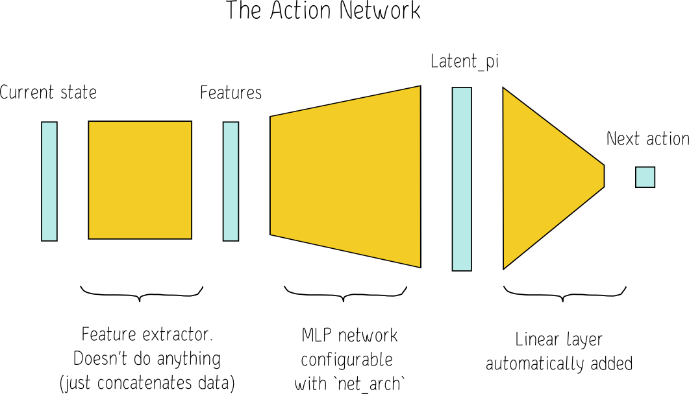

Neural networks
For PPO, we have two neural networks:
- the action network
action_net - the value network
value_net

Both networks are joined together in a single PyTorch network object, whose forward() function (the forward pass) is the following (from /data/venv/cnc-rl/lib/python3.11/site-packages/stable_baselines3/common/policies.py):
def forward(self, obs: th.Tensor, deterministic: bool = False) -> Tuple[th.Tensor, th.Tensor, th.Tensor]:
"""
Forward pass in all the networks (actor and critic)
:param obs: Observation
:param deterministic: Whether to sample or use deterministic actions
:return: action, value and log probability of the action
"""
# Preprocess the observation if needed
features = self.extract_features(obs)
if self.share_features_extractor:
latent_pi, latent_vf = self.mlp_extractor(features)
else:
pi_features, vf_features = features
latent_pi = self.mlp_extractor.forward_actor(pi_features)
latent_vf = self.mlp_extractor.forward_critic(vf_features)
# Evaluate the values for the given observations
values = self.value_net(latent_vf)
distribution = self._get_action_dist_from_latent(latent_pi)
actions = distribution.get_actions(deterministic=deterministic)
log_prob = distribution.log_prob(actions)
actions = actions.reshape((-1, *self.action_space.shape))
return actions, values, log_probPPO training
The main loop in PPO consists of two steps:
- Repeat
- Rollout
- play simulations with current policy and collect rewards
- doesn’t update anything
- it’s here where distribution sampling is done, during simulations
- Train
- train neural networks according to PPO policy, using the data recorded during the rollout stage
- distribution is not sampled here, but it needs to recompute the probability of the actions recorded during collection
- Rollout
The general idea of PPO training is:
- During rollout, collect the cumulative reward (i.e. value) out of every state, to act like a ground truth
- This used the current policy, i.e. current Action Net, when sampling actions
- Save all the tuples
(state, action taken, cumulative reward)
- Compute the estimated value of the same states with the Value Net
- Compare and update:
- look back on all the
(state, action taken, cumulative reward)tuples collected, and: - for actions leading to states where the Value Net output is larger than observed ground truth value, decrease the probability of those actions (i.e. we overestimated those actions’ worth, compared to ground truth)
- for actions leading to states where the Value Net output is smaller than observed ground truth value, increase the probability of those actions (i.e. we underestimated those action’ worth, compared to ground truth)
- look back on all the
The equilibrium state, when both Action Net and Value Net are fully converged, is when the cumulative rewards collected in the rollout stage, with the current Action Net (current policy), are identical to those states’ values as computed by the Value Net.
Sampling mechanism
For sampling, it depends how the policy (action probability distribution) is parameterized. The underlying distributions are the ones from PyTorch (see below, from /data/venv/cnc-rl/lib/python3.11/site-packages/stable_baselines3/common/policies.py):
from torch.distributions import Bernoulli, Categorical, Normal def _get_action_dist_from_latent(self, latent_pi: th.Tensor) -> Distribution:
"""
Retrieve action distribution given the latent codes.
:param latent_pi: Latent code for the actor
:return: Action distribution
"""
mean_actions = self.action_net(latent_pi)
if isinstance(self.action_dist, DiagGaussianDistribution):
return self.action_dist.proba_distribution(mean_actions, self.log_std)
elif isinstance(self.action_dist, CategoricalDistribution):
# Here mean_actions are the logits before the softmax
return self.action_dist.proba_distribution(action_logits=mean_actions)
elif isinstance(self.action_dist, MultiCategoricalDistribution):
# Here mean_actions are the flattened logits
return self.action_dist.proba_distribution(action_logits=mean_actions)
elif isinstance(self.action_dist, BernoulliDistribution):
# Here mean_actions are the logits (before rounding to get the binary actions)
return self.action_dist.proba_distribution(action_logits=mean_actions)
elif isinstance(self.action_dist, StateDependentNoiseDistribution):
return self.action_dist.proba_distribution(mean_actions, self.log_std, latent_pi)
else:
raise ValueError("Invalid action distribution")Continuous actions
For continuous actions, the distribution is parameterized a diagonal gaussian:
- the mean is the value produced by the Action Net (size = action size)
- the deviation is another learnable parameter (size = 1, same value for all dimensions)
Sampling is done using the same reparameterization trick as in Variational Autoencoders: sample the standard normal, then multiply with deviation and add mean.
When no sampling is done and we want the most likely action, this is simply the mean action, i.e. the output of the Action Net.
Choosing the next step is therefore choosing a point from a gaussian cloud:
Discrete actions
For discrete actions, the distribution is a categorical distribution
- Action Net produces directly the probabilities (or logits) of every action (vector size = action size)
- sampling is done with PyTorch